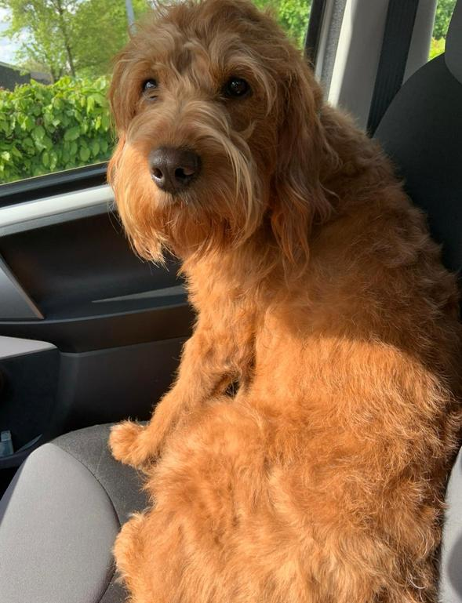
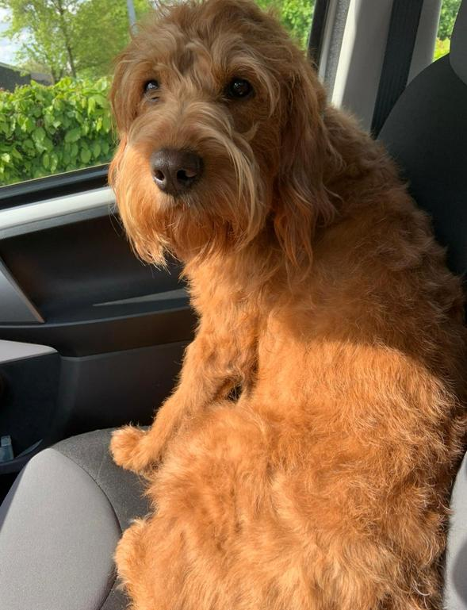

Trimmen en knippen
- Wassen van de hond (Als de vacht dit voor de trimbeurt nodig heeft)
- Volledig uitborstelen en ontklitten van de vacht
- Knippen of scheren van de vacht
- Controle van nagels en oren


Prijs: €35 PER UUR
Plukken
- Volledig plukken van de hond
- Waar nodig knippen van de hond
- Controle nagels en oren
 

Prijs: €35 PER UUR
Wassen en drogen
Wilt u de vacht van uw hond lekker fris gewassen, kies dan voor de was- en droogbeurt bij hondentrimsalon Murphy.

Prijs: €17,50 PER 30min
puppywenbeurt
Heeft u een puppy die u graag kennis wilt laten maken met de ditjes en datjes van de trimsalon. Dit om te voorkomen dat de hond op latere leeftijd meer last heeft van angst en stress tijdens de trimbeurt, kom dan langs voor een puppywenbeurt. De kennismaking kan plaats vinden tussen de 4 tot 6 maanden. Deze periode word aangehouden omdat vaak de vachtwisseling nog niet is begonnen, waardoor de vacht goed doorkambaar is. Tijdens de wenbeurt word de puppy geborsteld en worden de oogjes, voetzooltjes en het achterste vrijgeknipt. De puppy maakt ook kennis met de trimster wat ook voor stressvermindering kan zorgen in de toekomst. Ook is het heel belangrijk dat de pup went aan de factoren die meespelen in een trimsalon zoals de geurtjes en geluiden.

Prijs: €10